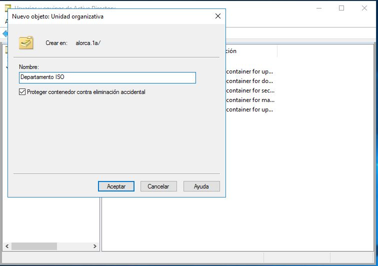
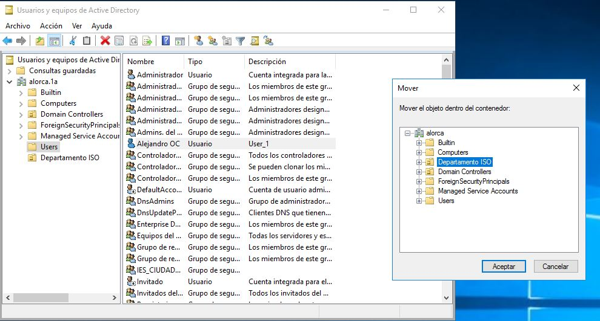
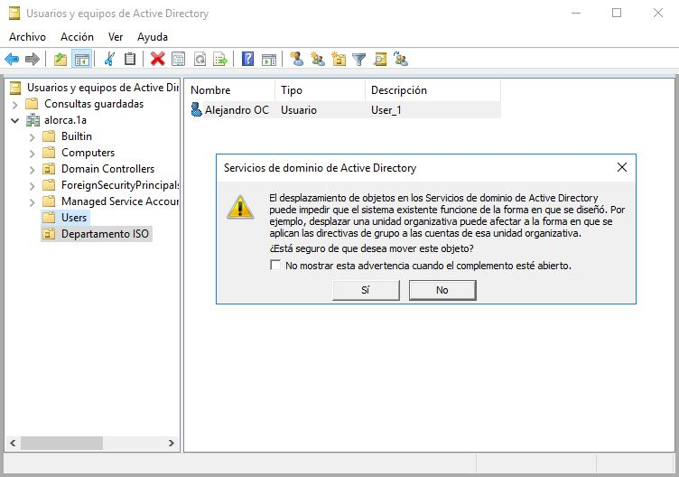
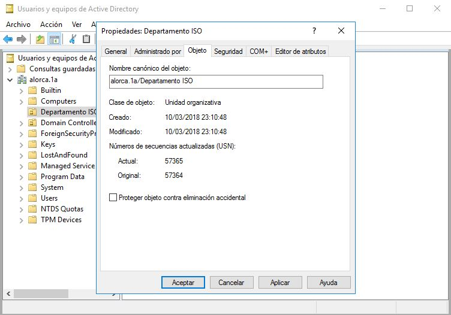

a.6) Organización de los objetos del dominio
Una vez creada una Unidad Organizativa, podemos otorgarle valores de configuración de directiva de grupo o podemos delegar sobre ella una parte de la autoridad administrativa. Así, un usuario puede tener autoridad para administrar una determinada unidad organizativa y no tenerla para el resto. En definitiva, actuarán como contenedores que nos ayudan a representar la organización lógica de nuestra red.
Crear una nueva unidad organizativa
Como de costumbre, comenzamos por abrir la herramienta Usuarios y equipos de Active Directory. A continuación, ponemos el puntero del ratón sobre el nombre del dominio y hacemos click con el botón derecho, en el menú de contexto que aparece, elegimos Nuevo y a continuación, Unidad organizativa, escribimos el nombre que queramos. También podemos dejar marcada la opción Proteger contenedor contra eliminación accidental. De esta forma, el sistema impedirá que eliminemos la Unidad Organizativa por error.
Ya debe aparecer la unidad organizativa abajo de la Carpeta Users.
Desplazar objetos de una unidad a otra
Existe dos formas de realizar dicho desplazamiento:
- Mover: seleccionamos los objetos y una vez seleccionado le damos click derecho y luego en Mover, al darle en mover, aparecerá una ventana y en esa nueva ventana marcamos la unidad organizativa donde lo queremos mover.
- Desplazar: seleccionamos los objetos y en vez de darle con click derecho y luego clickear en mover, pues lo arrastramos hacia la unidad organizativa que queremos.

DESPLAZAR
Le damos a Sí.
Eliminar una unidad organizativa.
Como de costumbre, comenzamos por abrir la herramienta Usuarios y equipos de Active Directory. A continuación, ponemos el puntero del ratón sobre el nombre de la Unidad Organizativa que queremos eliminar y hacemos click con el botón derecho del ratón, en el menú de contexto que aparece, elegimos Eliminar, no nos dejará eliminar si hemos activado la opción Proteger contenedor contra eliminación accidental, para deshabilitar esa opción (si la hemos marcado anteriormente o sino no es necesario, ya que se habrá borrado la unidad) le damos a Ver y luego a Unidad Organizativa. Le damos click derecho en dicha unidad que queremos borrar, pulsamos en Propiedades y luego nos vamos a la sección Objeto y desmarcamos la opción Proteger objeto contra eliminación accidental.
Aceptamos los cambios y ya podremos borrar dicha unidad.